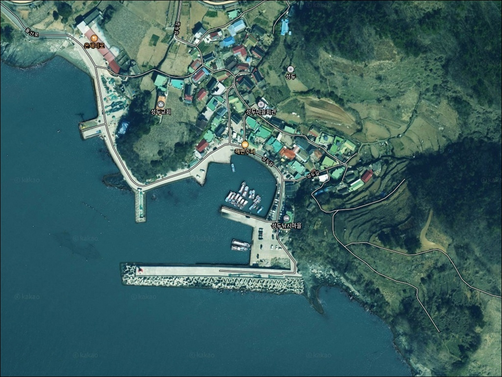
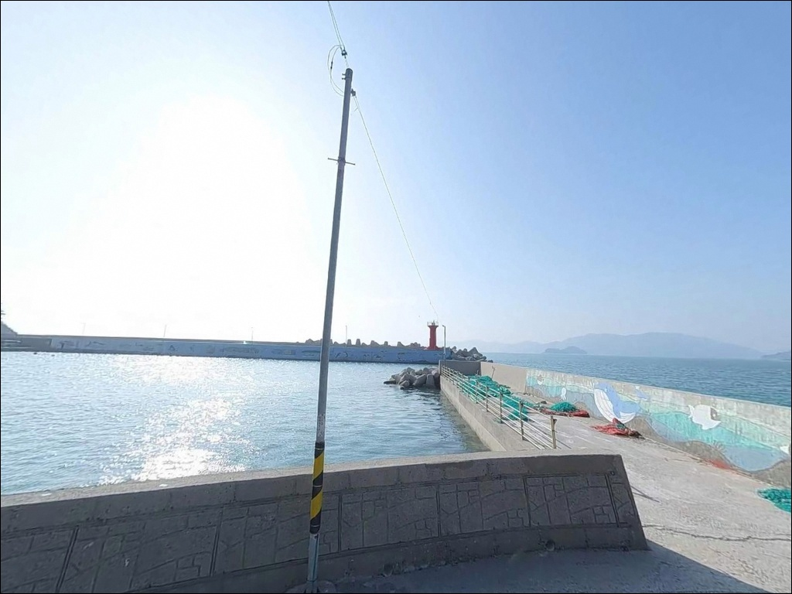
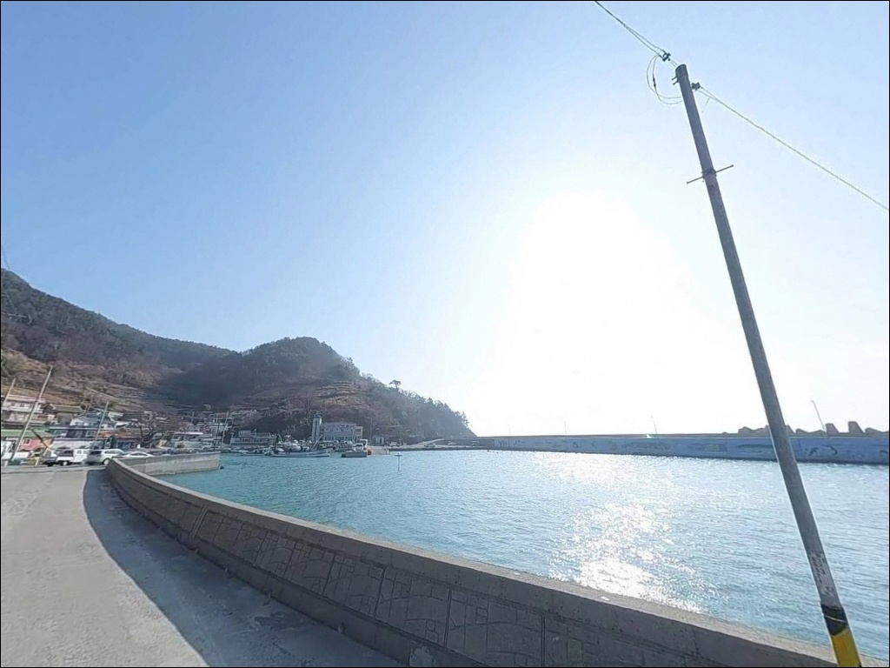
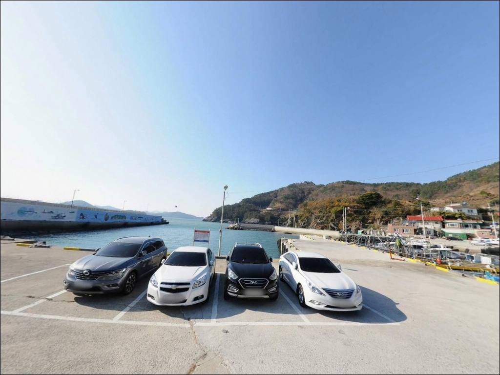
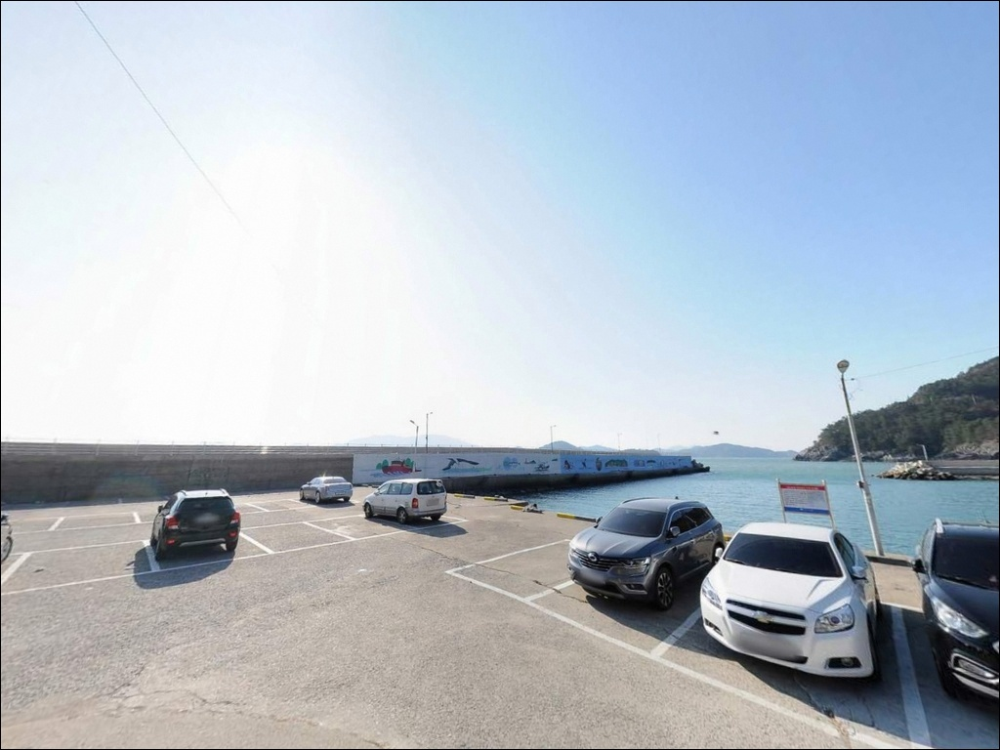
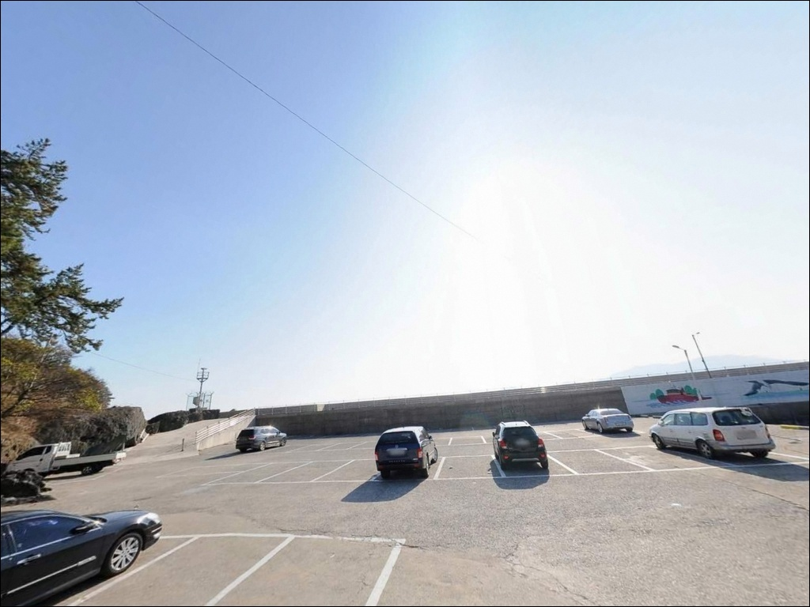
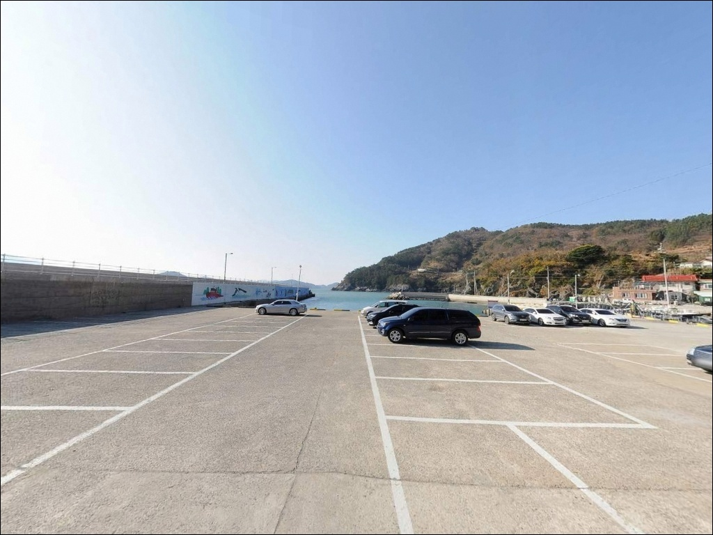
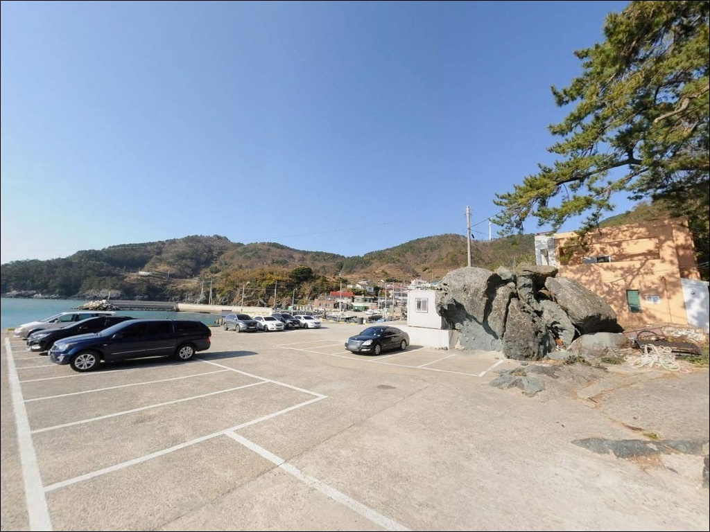
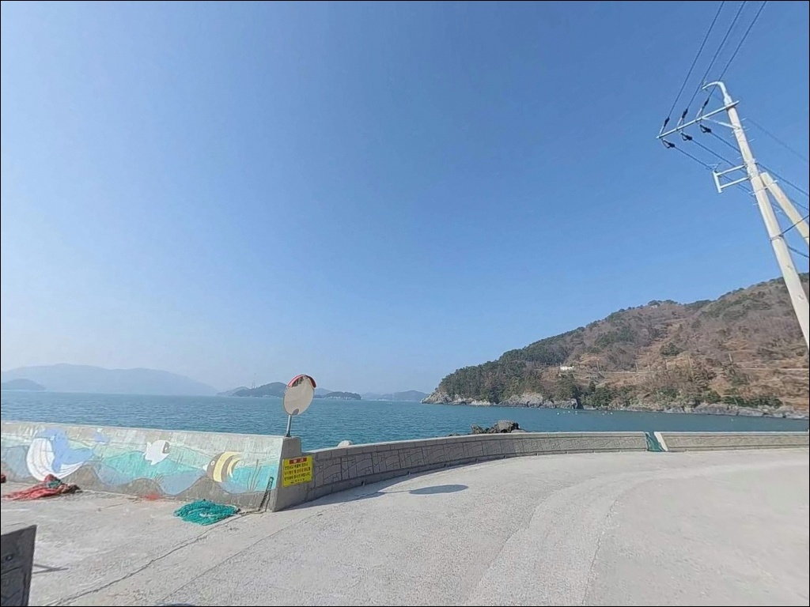

입구 2m에서 끝단 7m까지 수심 급변하는 여수 성두항 방파제
이 페이지에는 광고(제휴 링크 포함)가 있으며, 광고 링크를 통해 구매하면 운영자가 판매 수익 또는 수수료를 받을 수 있습니다. 포인트 사진: 카카오맵 스카이뷰·로드뷰. 이 페이지의 지도·사진 이미지는 카카오맵의 실제 서비스 이미지와 다를 수 있습니다.


포인트 안내
성두항
전남 여수시 돌산읍 금성리 114-1
방파제 입구와 끝단의 수심 차이를
모르고 아무 자리나 잡으면
같은 채비로도 전혀 다른 조건을 만납니다.
성두항 방파제는 입구 쪽 2m 수심에서
끝단까지 5~7m, 외해 10m권까지
자리에 따라 수심이 급격히 달라지는 구조입니다.
돌산도 남쪽 끝자락,
성두마을 앞에 자리한 이 방파제는
남해 외해를 정면으로 바라보는 노출형 구조입니다.
지방어항으로 지정된 소형 항구이며,
풍력발전기 2기가 랜드마크 역할을 합니다.
방파제와 연결된 갯바위까지
도보로 진입이 가능한 구조입니다.
이 글은 성두항의 진입 동선,
차박 체류 여건, 수심별 낚시 자리 판단,
낚시 스타일별 공략 조건에 집중합니다.
조황 단정이나 특정 어종 보장은
이 글의 범위에 포함되지 않습니다.

1. 진입 동선과 포인트 접근성
여수시내에서 돌산대교를 건넌 뒤
방죽포해수욕장 방향으로 이동하고,
해수욕장 입구에서 향일암·임포 방면으로 진행하면
성두길로 진입할 수 있습니다.
포장도로가 직접 연결되어 있어
길을 찾는 데는 어려움이 없는 편입니다.
다만 금성리 일대는 평야가 없는 산지 지형으로
도로 선형이 좋지 않습니다.
커브 구간이 많고 도로 폭이 좁은 구간이
이어지는 구조입니다.
성두마을은 돌산읍 내에서도
교통 접근이 불리한 오지에 해당하며,
대형 SUV나 캠핑카라면
출발 전 위성지도로 진입로를 반드시 확인해야 합니다.
방파제 내항 공간에
소형 주차 및 회차 공간이 확보되어 있습니다.
성두마을 진입로 인근 공터도
방파제에서 도보로 닿을 수 있는 거리입니다.
어선 접안 구역과 분리된 공간을
우선적으로 활용하는 것이 기본입니다.

2. 차박 환경과 야간 체류 여건
성두마을은 소규모 어촌 집락으로
민가 밀집도가 낮고
외부 관광객 유입이 적은 편입니다.
야간 차량 통행 빈도가 낮아
프라이버시는 양호한 수준입니다.
낚싯배 이용객 외에는 인적이 드물어
조용한 환경이 유지됩니다.
방파제에 가로등 시설이 설치되어 있어
야간 이동 환경은 확보된 편입니다.
다만 외항 테트라포드 구간은
가로등 범위 밖이므로
개인 헤드랜턴은 반드시 챙겨야 합니다.
성두항 방파제는 남해 외해를 직접 바라보는 구조로
기상이 나빠지면 파고 상승이 빠릅니다.
강풍이나 너울이 예보된 날에는
외항 쪽 체류를 피하고
내항 선착장 쪽으로 자리를 옮기는 것이
기본 판단 기준입니다.
차박 자리는 내항 공터가 바람 영향을 덜 받는 구간입니다.


3. 주변 편의시설 및 인프라 현황
성두마을 자체에는
편의점과 주유소가 없습니다.
완전 자급 체제로 진입하는 것이
현실적인 준비 방식입니다.
식수, 얼음, 낚시 소품, 연료 모두
출발 전에 갖춰야 합니다.
반경 3km권에서는 임포마을 방향으로
향일암 방문객 대상 숙박업소가 다수 있으며
소규모 편의시설이 일부 존재합니다.
죽포리 하나로마트까지는
차량으로 10~15분 거리입니다.
부족한 소품이 생긴다면
이 동선을 미리 파악해두는 편이 효율적입니다.
응급 상황 발생 시
돌산읍 보건지소까지 차량 20~25분,
여수시내 종합병원은
돌산대교를 건너야 하므로 40분 이상 소요됩니다.
비상약품과 구명조끼 준비는
출발 단계에서 반드시 갖춰야 합니다.

4. 외항 방파제에서 낚시 자리가 달라지는 조건
성두항 방문 전 가장 먼저 확인할 것은
기상과 파고입니다.
외해를 직접 바라보는 노출형 구조라
기상 변화 시 파고 상승이 빠릅니다.
기상청 해양기상 서비스에서
당일 파고를 출발 전에 재확인하는 습관이
포인트 낭비를 막는 가장 확실한 방법입니다.
외항 테트라포드는 크기가 상당하여
이동 시 발 디딤에 주의가 필요합니다.
핀부츠 착용과 구명조끼는
선택이 아닌 필수 조건입니다.
가급적 2인 이상 동행을 권장하며,
야간에는 헤드랜턴과 보조 조명을 동시에 준비하는 것이
안전 기본 조건입니다.
성두항은 지방어항으로 어선 계류시설이 운영되는 곳입니다.
내항 낚시 시 어선 항로를 방해하지 않아야 하며,
주차 공간도 어선 접안 구역과
분리하여 사용해야 합니다.
갯바위 연결 구간 진입은
간조 시간대와 파도 상태를 반드시 확인한 뒤 진입합니다.

5. 지형 기반 낚시 여건 분석
성두항은 돌산도 최남단에서
외해를 직접 바라보는 구조입니다.
방파제 길이는 약 40m이며
폭이 넓어 복수의 낚시 스타일을
동시에 운용할 수 있습니다.
방파제 외항 쪽에는
40톤급 7개와 6.3톤급 119개의
테트라포드가 촘촘하게 설치되어 있습니다.
수심 구조가 이 포인트의 핵심입니다.
방파제 입구 쪽은 수심 2m 내외로 얕지만,
끝단으로 갈수록 5~7m까지 깊어지며
외해 쪽으로 10m권이 형성됩니다.
돌산도 남부 최외곽 위치 특성상
내만 포인트 대비 수심 급변 구간이 빠른 편입니다.
방파제 끝단과 외해 방향이
조류 흐름을 직접 받는 핵심 자리입니다.
방파제와 연결된 갯바위 구간이
도보로 진입 가능합니다.
갯바위 구간은 테트라포드와 다른
자연 암반 지형을 형성하고 있어
루어 캐스팅과 찌낚시를
번갈아 운용하기 좋은 조건입니다.
돌산도 갈치 시즌 진입이
내만 포인트보다 이른 편인 점도
참고할 만합니다.
출조 전 성두방파제 조황 검색을
먼저 확인하고 가시기 바랍니다.


6. 포인트에 어울리는 낚시 스타일
성두항에서 기본으로 꼽히는 방식은
릴찌낚시입니다.
외항 테트라포드 전역이 감성돔 포인트 구조를 갖추고 있으며,
낮 시간대 방파제 왼쪽 전방 15m 내외를
중들물~중날물 타이밍에 공략하는 방식이
이 포인트 지형 조건과 가장 잘 맞는 패턴입니다.
조류가 빠른 구간에서는 1호 이상의
고부력 채비를 활용하는 것이 유리합니다.
에깅도 이 포인트에 잘 어울립니다.
방파제 꺾이는 구간부터 끝단 사이
외항 석축 경계면이 핵심 구간이며,
내항 쪽도 갑오징어 포인트로 활용됩니다.
갈치 시즌에는 야간 갈치낚시도
이 포인트 외해 노출 구조 특성상 기대해볼 수 있는 방식입니다.
야간에는 볼락 민장대 맥낚시가 잘 맞습니다.
테트라포드 구멍 사이와 방파제 직벽 경계를
청갯지렁이 미끼로 천천히 탐색하는 방식입니다.
방파제 가로등이 설치되어 있어
야간 운용 여건이 수월한 편입니다.
원투낚시는 내항 사질대에서 붕장어와 도다리를,
끝단 외해 방향으로 멀리 투척하면
바닥층 어종을 노릴 수 있는 수심이 확보됩니다.

7. 대안 포인트와 플랜 B 동선
성두항이 파도나 기상 여건으로
입장이 어려운 상황이라면
첫 번째 대안은 임포방파제입니다.
차량 5분 이내 거리로
향일암 아래 임포마을 앞에 자리한
조용한 소형 방파제입니다.
인적이 드물고 숙박업소 밀집 지역이라
인프라 접근도 성두보다 유리한 편입니다.
조과를 더 기대하고 싶다면
방죽포방파제(두문포방파제)가
두 번째 선택지입니다.
성두에서 차량 약 10분 거리로
테트라포드 없는 직벽형 구조라
민장대 맥낚시와 릴찌낚시 병행에 유리합니다.
진입로와 주차 여건이 성두보다
수월한 편이기도 합니다.
차박 여건이 더 넓은 공간이 필요하다면
방죽포해수욕장 인근이 대안입니다.
주차 면적이 성두보다 크고
진입로 폭도 여유가 있어
대형 차량 체류에 더 적합한 환경입니다.

수심 구조를 이해하면
성두항 낚시 자리 선택이 달라집니다
릴찌낚시나 에깅, 야간 볼락 맥낚시를
즐기는 낚시인이라면
성두항 방파제의 지형 조건은
잘 맞는 구조입니다.
외해를 직접 바라보는 노출형 방파제에
끝단 수심이 깊고 갯바위 도보 진입까지 가능해
한 포인트에서 복수의 스타일을
함께 운용할 수 있습니다.
반면 기상 확인 없이 외항 테트라포드에 진입하거나,
진입로 폭 파악 없이 대형 차량으로 떠나면
출발 단계에서부터 문제가 생기는 포인트입니다.
기상 확인, 진입로 사전 파악, 자급 준비,
이 세 가지를 갖추고 찾아간다면
돌산도 남부에서 손맛을 보기에 충분한 조건의 포인트입니다.
성두마을 앞 조용한 선착장에
차를 세우고 방파제에서 하룻밤을 보내는 차박 낚시라면,
낮의 릴찌낚시와 야간 볼락 맥낚시를
자연스럽게 이어가며
돌산도 남단 외해의 공기를 충분히 즐길 수 있는 곳입니다.